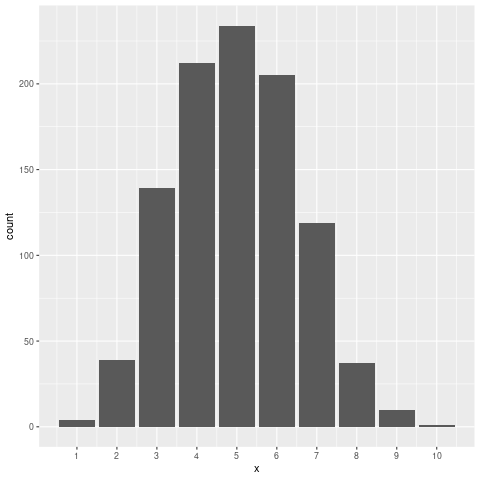
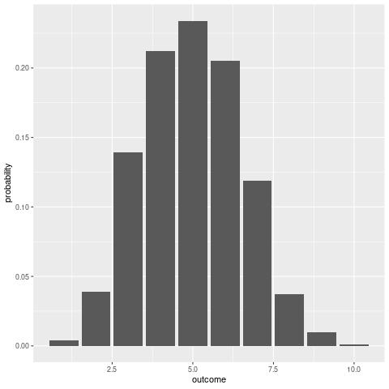
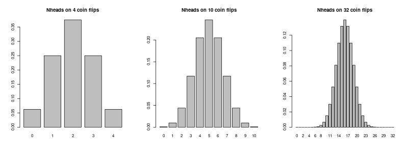
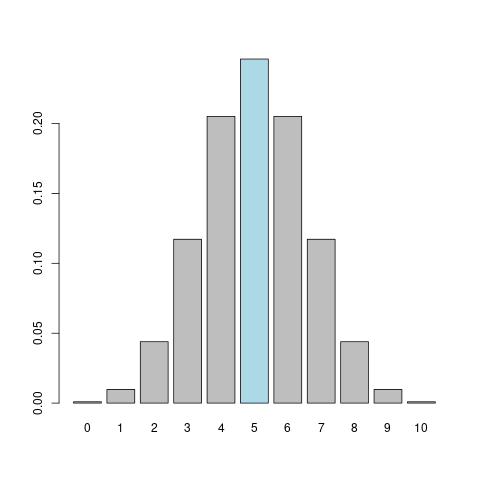
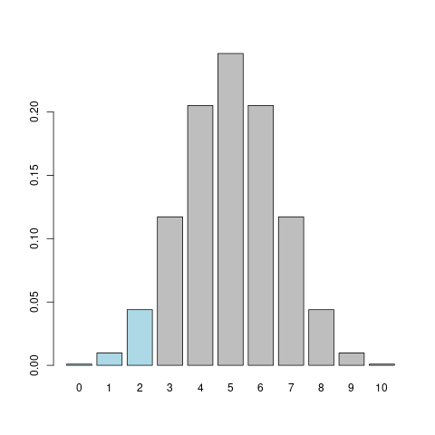
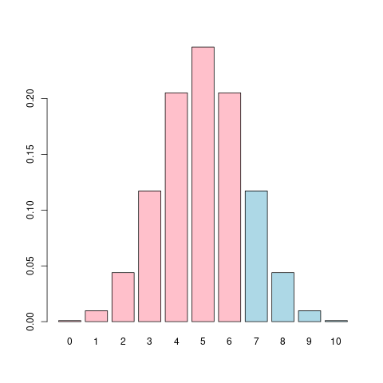
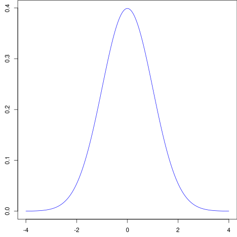
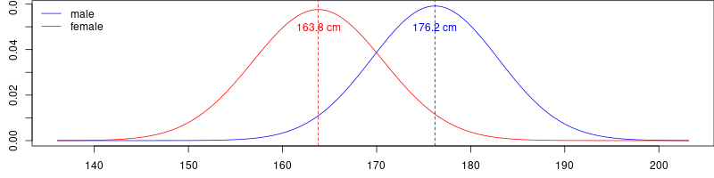
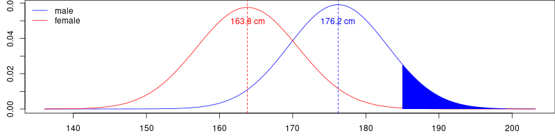

Probability and Probability distributions
Table of Contents
Background
For this session, we will build up a lab exercise on probability and probability distributions. The idea is to start out with a basic random process that is easy to understand and simulate in R (coin flipping), which introduces the idea of a discrete distribution (the binomial distribution). Next, we will talk about continuous distributions (the standard normal distribution) and z-scores.
In the process, we will learn about how to write simple functions in R, how to simulate data, and various distribution functions (density, quantile, etc.).
A discrete distribution: The binomial distribution
Let’s start by simulating a coin flip in R.
sample(c("heads", "tails"), 1)
[1] "tails"
Here we’re using the function sample(), which takes a random sample from the vector supplied as the first argument, x. In this case, the first argument has the two possible states of a coin: heads or tails. The second argument to sample() is the number of samples that we want to draw, which in this case is ’1’ for a single coin flip. If we wanted to flip the coin 10 times, we would type:
sample(c("heads", "tails"), 10)
Error in sample.int(length(x), size, replace, prob) : cannot take a sample larger than the population when 'replace = FALSE'
Whoops! We already see a problem. The default for sample() is to sample without replacement, which means that once a value is drawn, it is removed from the vector. What we need to do instead is to sample with replacement, which we can do just by overriding the default for the third argument replace, which by default is set to FALSE. (Note that the options in x are sampled with equal probability by default, but this can be overridden by changing the fourth argument, prob.)
sample(c("heads", "tails"), 10, TRUE)
[1] "tails" "tails" "heads" "heads" "tails" "heads" "heads" "tails" "tails" [10] "heads"
OK, let’s play a game where we count the number of heads that we get on \(k\) coin flips (we will call each coin flip a single ’trial’, like a trial in an experiment). Let’s store the result of the call to sample() in a variable, and then we will use a programming trick to count the number of heads.
k <- 10 flips <- sample(c("heads", "tails"), k, TRUE) nheads <- sum(flips == "heads")
The second statement here counts the number of heads using the sum() function. If you look at what the statement within sum() does on its own:
flips == "heads"
[1] TRUE TRUE FALSE FALSE TRUE FALSE TRUE TRUE TRUE TRUE
you can see that it is just comparing each value of flips to heads and returning TRUE if it’s heads, and FALSE otherwise. Because TRUE is equivalent to a ’1’ and FALSE is equivalent to a ’0’ in R, taking the sum() of the logical vector will return the number of heads (from 0 to k). This programming trick turns out to be a very useful way to count things in R. (We could also have used the function table() to count things, but in this case the output of table() is less useful for our purposes.)
Empirical distributions
OK, we’re going to start doing a lot of coin flipping, counting up how many heads we get and then creating distributions of the number of heads in k flips. Since we’re going to be doing the above steps over and over, it’s best if we wrap the code we’ve written into a function. This way we don’t have to type those steps every time we want to flip a coin and count up the number of heads.
head_count <- function(k) { flips <- sample(c("heads", "tails"), k, TRUE) sum(flips == "heads") }
Now let’s play around with the function.
> head_count(10) [1] 4 > head_count(10) [1] 3 > head_count(10) [1] 5 > head_count(10) [1] 4 > head_count(10) [1] 5 > head_count(100) [1] 44 > head_count(1000) [1] 513 > head_count(10000) [1] 5020
OK, let’s take it a step further and ask the question: what is the probability of getting 0 heads in 10 flips? 1 head in 10 flips? 2 heads in 10 flips? … 10 heads in 10 flips?
One way to find out is to estimate these probabilities through simulation. Let’s say that a single ’experiment’ consists of flipping the coin 10 times (i.e., one call to the function head_count(). What we can do is to repeat this ’experiment’ a large number of times, keeping track of the number of heads we got each time, and then plotting the results in a distribution. To do this, we will use the function replicate(). The first argument to replicate is the number of times we want to repeat a command; the second argument is the command to be repeated.
replicate(100, head_count(10))
[1] 2 6 7 4 6 5 3 6 5 7 4 5 5 5 6 7 3 3 4 6 3 5 5 6 6 6 9 6 4 7 7 7 5 3 3 5 8 [38] 4 3 5 5 4 6 4 8 5 5 3 4 5 5 5 4 5 5 6 5 3 7 5 7 4 3 5 6 6 7 7 3 4 5 3 5 5 [75] 7 8 8 6 4 4 2 7 6 6 2 5 5 3 8 5 5 6 5 5 7 4 5 5 4 6
We can plot a histogram of the experiment outcomes using ggplot2.
library("tidyverse") heads <- replicate(1000, head_count(10)) ggplot(tibble(x = heads), aes(x)) + geom_bar() + scale_x_continuous(breaks = 0:10)

Note that we can estimate the probability of each of the 11 outcomes (0:10) by counting them up and dividing through by the number of experiments. In this case we will count up using the function table().
table(heads)
heads 1 2 3 4 5 6 7 8 9 10 4 39 139 212 234 205 119 37 10 1
probs <- table(heads) / 1000
probs
heads
1 2 3 4 5 6 7 8 9 10
0.004 0.039 0.139 0.212 0.234 0.205 0.119 0.037 0.010 0.001
## make a tibble so we can view in ggplot2 my_probs <- tibble(outcome = as.integer(names(probs)), probability = probs) ggplot(my_probs, aes(outcome, probability)) + geom_col()

Now that we have estimated probabilities of different experimental outcomes, we can use these probabilities to answer questions like?
What is the probability of getting exactly 5 heads on 10 flips?
This was estimated as 0.234 from our simulation.
What is the probability of getting at most 2 heads on 10 flips?
For this we just add up \(P(Y = 0) + P(Y = 1) + P(Y = 2)\), which, from our simulations, yields 0.043
These probabilities are just estimates, and if we ran the experiment again, we’d get different results! We need something more definitive.
Theoretical distributions
Fortunately, mathematicians have determined how all the possible outcomes for a ’coin flipping’ type experiment can be enumerated such that the probabilities can be calculated exactly. This is quantified in the form of the binomial distribution (Wikipedia).

Note that you can plot your own version of the theoretical distribution using:
bdist <- tibble(outcome = 0:10,
probability = dbinom(outcome, 10, .5))
ggplot(bdist, aes(outcome, probability)) +
geom_col() +
scale_x_continuous(breaks = 0:10)
The binomial distribution is determined by three parameters: \(N\), the number of trials (which was 10 in the case of our coin flipping experiment), \(k\), the number of ’successes’ over all \(N\) trials (e.g., getting exactly 5 heads on 10 flips), and \(p\), the probability of success on any one trial (e.g., the probability of a coin flip turning up heads, which is .5).
R provides various functions for working with the binomial distribution:
The Binomial Distribution
Description:
Density, distribution function, quantile function and random
generation for the binomial distribution with parameters ‘size’
and ‘prob’.
This is conventionally interpreted as the number of ‘successes’ in
‘size’ trials.
Usage:
dbinom(x, size, prob, log = FALSE)
pbinom(q, size, prob, lower.tail = TRUE, log.p = FALSE)
qbinom(p, size, prob, lower.tail = TRUE, log.p = FALSE)
rbinom(n, size, prob)
Arguments:
x, q: vector of quantiles.
p: vector of probabilities.
n: number of observations. If ‘length(n) > 1’, the length is
taken to be the number required.
size: number of trials (zero or more).
prob: probability of success on each trial.
log, log.p: logical; if TRUE, probabilities p are given as log(p).
lower.tail: logical; if TRUE (default), probabilities are P[X <= x],
otherwise, P[X > x].
Note that the four functions are all named in the form *binom where the * is either d, p, q, and r.
- The
dindbinom()stands for density.dbinom()returns the probability ofxsuccesses givensizetrials and probability of successprob. - The
pinpbinom()gives the distribution function.pbinomreturns the probability of getting \(X \le x\) successes givensizetrials and probability of successprob. It is the typical function that you would use to get something corresponding to a ’p-value’ (which is the reason it starts with a ’p’). - The
qinqbinom()is the ’quantile’ function; it returns the number of successes cutting offpprobability, givensizetrials and a probability of successprob. - The
rinrbinom()is a random generation function. It will randomly generatenexperiments, each havingsizetrials andprobprobability of success, and return the number of successes in each.
These things are confusing, so play around with them until you fully understand how they work. Note that this system of density, distribution, quantile, and random generation functions is repeated through all different kinds of probability distributions in R.
dnorm() |
pnorm() |
qnorm() |
rnorm() |
Normal Distribution | |
dt() |
pt() |
qt() |
rt() |
Student’s (Gosset’s) \(t\) distribution | |
dchisq() |
pchisq() |
qchisq() |
rchisq() |
Chi-square distribution | |
df() |
pf() |
qf() |
rf() |
\(F\) distribution |
If you master these functions, you’ll never need to look up a critical value in a statistical table ever again!
To sharpen our understanding, let’s try these functions out to answer the two questions above:
What is the probability of getting exactly 5 heads on 10 flips?
dbinom(5, 10, .5)
[1] 0.2460938
Note that this is just giving us the height of this blue bar:

What is the probability of getting at most 2 heads on 10 flips?
pbinom(2, 10, .5)
[1] 0.0546875
Note that there is another way we could have done this:
probs <- dbinom(0:2, 10, .5)
probs
sum(probs)
[1] 0.0009765625 0.0097656250 0.0439453125 [1] 0.0546875
In this latter strategy, we are just adding up the heights of the three blue bars.

What is the probability of getting 7 or more heads on 10 flips?
sum(dbinom(7:10, 10, .5))
[1] 0.171875
or, equivalently:
pbinom(6, 10, .5, lower.tail = FALSE)
[1] 0.171875
What pbinom() gives us is the probability of getting 0 to 6 successes (the lower tail of the distribution, given by the pink bars). The total area under the curve for a theoretical distribution sums to 1. If we want the upper tail instead, we set lower.tail to FALSE, and this will give us the probability for the blue bars.

OK now let’s consider a scenario in which you’d use the quantile function qbinom() You suspect that the coin is biased against heads. Your null hypothesis is that the coin is not biased against heads (\(P(heads) = .5\)).
You are going to run a single experiment to test your hypothesis, with 10 trials.
What is the minimum number of ’successes’ that is acceptable, if you want to keep your long-run error rate for this type of experiment at .05?
qbinom(.05, 10, .5)
[1] 2
So if you got less than two heads, you would reject the null that the coin was unbiased against heads.
Ten trials is probably far too few.
What would your cutoff be if you ran 100 trials?
qbinom(.05, 100, .5)
[1] 42
What would your cutoff be for 1000?
qbinom(.05, 1000, .5)
[1] 474
What would your cutoff be for 10000?
qbinom(.05, 10000, .5)
[1] 4918
Let’s answer the same three questions above, but let’s assume that we wanted to be more conservative, and reduce our error rate to .01. What would your cutoffs be for 10, 100, 1000, and 10000 trials?
qbinom(.01, c(10, 100, 1000, 10000), .5)
[1] 1 38 463 4884
Data simulation with the binomial distribution
The rbinom() function can be used to simulate data. Let’s try it out.
Above you wrote a function head_count() to simulate the flipping of a coin 10 times and counting the number of heads. You can use rbinom() to do the same thing. This function is useful for simulation.
Use rbinom() to simulate four experiments in each of which you flip a coin 10 times and count the number of heads.
rbinom(4, 10, .5)
[1] 4 4 8 3
Use rbinom() to simulate 10 experiments, in each of which you roll a six sided die 100 times and count the number of times you get a ’2’.
rbinom(10, 100, 1/6)
[1] 18 12 15 15 14 14 25 16 11 20
A continuous distribution: The normal distribution
As the above illustrates, probability distributions are useful for estimating probabilities and determining cutoff values in hypothesis testing. However, many of the variables we are interested in are continuous rather than discrete. Many such variables (IQ, height, weight) tend to show a normal distribution such as illustrated below.

According to the Scottish Health Survey (2008), the mean height for 16-24 year old Scottish males is 176.2 cm with a standard deviation of 6.748; for females the mean is 163.8 cm with a standard deviation of 6.931. Assuming height is normally distributed (a safe assumption), here are the (estimated) height distributions for 16-24 year olds in Scotland:

Unlike with discrete distributions, it does not really make sense to ask for the probability of an exact value. Instead, we can ask for the probability that a value falls within a particular range \((x_1, x_2\)), \(P(x_1 < X < x_2)\).
So we can ask:
What is the probability that a 16-24 yo Scottish male is at least 185cm tall?
Note that we are asking for the area shaded in blue:

There are two ways to answer this question. The easy way is just to use the pnorm() function, specifying the mean and SD as the second and third arguments. We want the upper tail, so lower.tail should be set to FALSE.
pnorm(185, 176.2, 6.748, lower.tail = FALSE)
[1] 0.09610143
What is the probability of a randomly selected Scottish woman being shorter than 155cm?
pnorm(155, 163.8, 6.931) # lower.tail = TRUE
[1] 0.1021032
What is the probability of a randomly selected Scottish man being taller than the average Scottish woman?
pnorm(163.8, 176.2, 6.748, lower.tail = FALSE)
[1] 0.966938
z-scores
The other way to do it, which is good to know, is using \(z\) scores. A z score expresses a score relative to the standard normal distribution, which is a normal distribution that has a mean of zero and a standard deviation of
The formula for a \(z\) score is:
\(z = \frac{X - \mu}{\sigma}\)
Where \(\mu\) is the population mean and \(\sigma\) is the population SD.
Let us return to our original question and do it with the z-score approach:
What is the probability that a 16-24 yo Scottish male is at least 185cm tall?
A 185cm tall male has a \(z\) score of 1.304
Using the pnorm() function with lower.tail set to FALSE:
this_z <- (185-176.2) / 6.748 pnorm(this_z, lower.tail = FALSE)
[1] 0.09610143
What is useful about z scores is that it gives us a good way to compare different distributions. For instance, we can compare a tall male to a tall female to answer the question:
Which one of these people is taller relative to other people of their same sex?
Angus is 198cm tall, and Fiona is 188cm tall. Which one is more freakishly tall?
z_f <- (188 - 163.8) / 6.931 z_a <- (198 - 176.2) / 6.748 c(Angus = z_a, Fiona = z_f)
Angus Fiona 3.230587 3.491560
So Fiona, being about 3.5SD above the mean for her sex, is taller relative to other women than Angus is relative to other men.
OK, let’s imagine that Fiona refuses to date any men who are shorter than her (i.e., men who are 188cm or below have no chance).
What proportion of men would be eligible to date Fiona?
## a z-score for a man as tall as Fiona is: z_male <- (188 - 176.2) / 6.748 z_male
[1] 1.748666
So a male as tall as her is about 1.7 SDs above the mean for his sex. What proportion of young Scottish men are at least this height?
pnorm(z_male, lower.tail = FALSE)
[1] 0.04017436
Only about 4%! She might want to move to the Netherlands!
Fiona decides to be less picky. If she wanted to increase the pool of eligible men to 10% of the male population, what height cutoff should she put in her dating profile?
qnorm(.10, 176.2, 6.748, lower.tail = FALSE)
[1] 184.8479